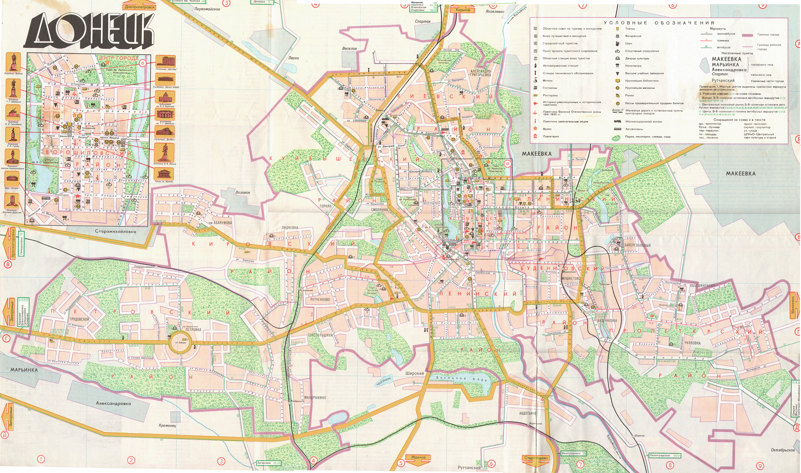
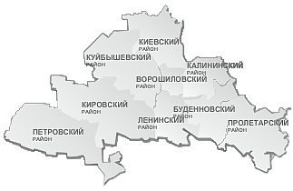
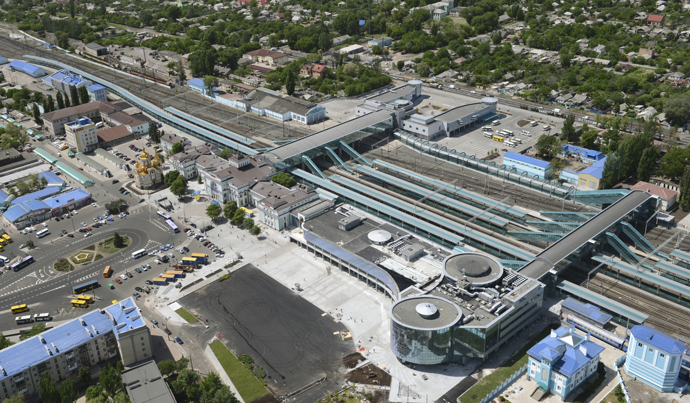

ГЕОГРАФИЧЕСКОЕ ПОЛОЖЕНИЕ

Город республиканского значения на юго-востоке Донецкой Народной Республики, административный центр одноимённого городского округа на реке Кальмиус, столица Донецкой Народной Республики.
АДМИНИСТРАТИВНОЕ ДЕЛЕНИЕ

Донецк поделен на 9 административных районов: Будённовский, Ворошиловский, Калининский, Киевский, Кировский, Куйбышевский, Ленинский, Петровский и Пролетарский.
ОБЩЕСТВЕННЫЙ ТРАНСПОРТ

Рельсовый транспорт
- Трамвай: 16 маршрутов, общая протяжённость 130 км.
- Железная дорога: главный вокзал (Киевский район), станции Рутченково, Мандрыкино, Мушкетово. Строительство завершено в 1882 году.
- Метрополитен: строительство начато в 1993 году, с 2014 года заморожено.
Безрельсовый транспорт
- Троллейбус: 19 маршрутов, общая протяжённость 188 км.
- Автобусы и маршрутные такси: 115 маршрутов, 32 службы такси.